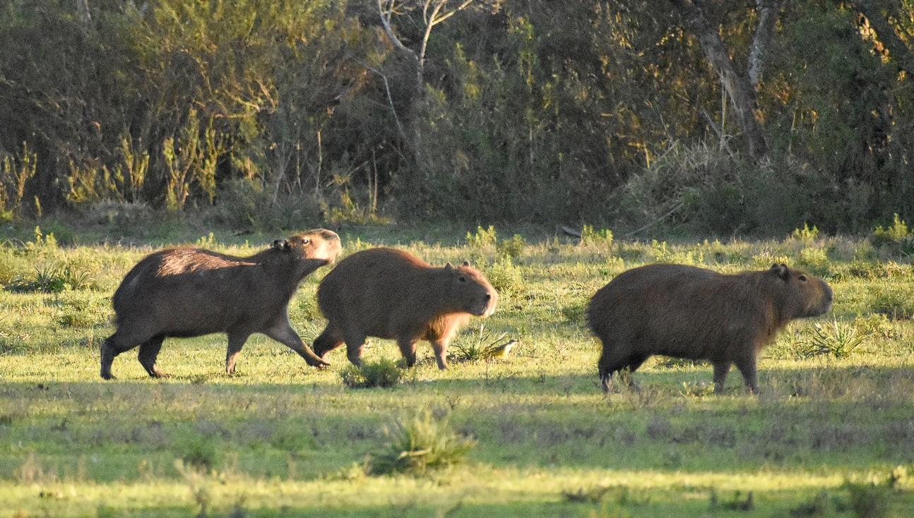

Капибара или Водосвинка - млекопитающее из семейства свинковых. Капибара - самый крупный ныне существующий грызун.
Длина тела капибары достигает 1—1,35 м.
Занятно описание капибары Джеральдом Дарреллом. "Этот гигантский
грызун представляет собой жирного зверька с продолговатым телом,
покрытым жёсткой лохматой шерстью пёстрой коричневой расцветки.
Передние лапы у капибары длиннее задних, массивный огузок (хах) не
имеет хвоста, и поэтому у неё всегда такой вид, будто она вот-вот
собирается сесть. У неё крупные лапы с широкими перепончатыми
пальцами, а когти на передних лапах, короткие и тупые, удивительно
напоминают миниатюрные копыта. Вид у неё весьма
аристократический(ахахахаах): её плоская широкая голова и тупая, почти
квадратная морда имеют благодушно-покровительственное выражение,
придающее ей сходство с задумчивым львом. По земле капибара
передвигается характерной шаркающей походкой или скачет вразвалку
галопом, в воде же плавает и ныряет с поразительной лёгкостью и
проворством. Капибара — флегматичный добродушный вегетарианец,
лишённый ярких индивидуальных черт, присущих некоторым его сородичам,
но этот недостаток восполняется у неё спокойным и дружелюбным
нравом."
Большая часть Южной Америки. Страны: Аргентина, Боливия, Бразилия,
Венесуэла, Гайана, Колумбия, Парагвай, Перу, Уругвай, Французская и
Гвиана. (На карте зелёный
цвет)
Питание капибар включает в себя плоды, клубни, сено, траву и водные растения. Иногда, при недостатке пищи могут питаться сельскохозяйственными культурами.
Ведёт полуводный образ жизни; от воды редко удаляется более чем на 500—1000 м. Капибары активны преимущественно днём. Капибара прекрасно плавает и ныряет. Высокое расположение на голове глаз, ушей и ноздрей позволяет ей при плавании держать их над водой. Естественные враги животного — дикие собаки, крокодиловые кайманы, оринокские крокодилы, ягуары, оцелоты, анаконды. В природе капибары живут от 6 до 10 лет, а в неволе — от 10 до 12.
Капибары — социальные животные, живущие группами по 10—20 особей. Группы состоят из доминирующего самца, нескольких взрослых самок, самцов и капибарят. 5—10% капибар, преимущественно самцов, живут в одиночку. Доминантный самец часто изгоняет из группы самцов-конкурентов. Чем засушливей местность, тем крупнее группы. В засуху вокруг водоёмов иногда скапливается до нескольких сотен особей. Доминирующий самец помечает территорию (до 10 га) выделениями сальных желёз на конце мордочки. Он трётся головой о траву, кусты, деревья. Детёныши капибар с рождения приспособлены к жизни, имеют открытые глаза и шерсть.
Фото: Ezequiel Racker, CaplinRous at English Wikipedia.